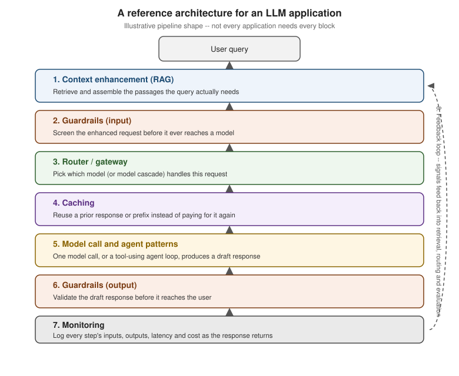

AI Application Architecture
|
This content was generated with the assistance of AI and should be verified against the official documentation before being relied on in production. |
The examples on this page target Python 3.12 with the current anthropic SDK, checked against the vendor’s
own documentation as of 2026-09-28. Nothing here is a new capability — every block below is a concept this
section (or the Vector Databases & RAG reference) already covers on its
own page. What this page adds is the shape those pieces form once they are wired together into one request
path, so a reader who has followed the rest of this section end to end can see where each piece actually sits.
Why a reference shape helps
A single Anthropic or OpenAI API call is easy to reason about in isolation: send messages, get a response. Once an application has to retrieve its own data, enforce safety and cost limits, choose among several models, avoid repeating expensive work and keep tools calling each other in a loop, the request path grows into something with distinct, reorderable stages — each with its own failure mode and its own place to add an optimisation. Naming those stages, and fixing the order they usually run in, is what a reference architecture buys: it gives each concern (retrieval, safety, routing, cost, agency, observability) a slot, so a team adding one new piece knows which existing piece it sits next to instead of bolting it onto whatever function happens to be nearby.
The pipeline, block by block
The diagram below sketches one incoming user query moving through eight stages, ending in a feedback loop that data can flow back through into earlier stages:

-
Context enhancement. Before the query ever reaches a model, an application typically enriches it with data the model was not trained on: retrieved passages from a private corpus, tool outputs, or structured facts pulled from a database. RAG fundamentals covers this stage in depth — the retrieval step that decides which passages to add, and the prompt-assembly step that decides how they are laid out inside the context window.
-
Guardrails. Two checkpoints, not one: an input guardrail screens the (now context-enhanced) request before it reaches a model at all — rejecting or rewriting a prompt-injection attempt, a request for disallowed content, or a query clearly outside the application’s scope — and an output guardrail validates the model’s draft response before it reaches the user, catching a leaked system prompt, an unsafe instruction, or a response that fails a schema or policy check. The AI Security & Responsible AI sub-section covers designing both checkpoints in Guardrails and Improper Output Handling; the closed-choice and self-verification patterns on Hallucinations & Limitations remain a simple example of an output-side check.
-
Router / gateway. A single application rarely calls only one model: a router inspects each request (its complexity, its latency budget, its cost target) and decides which model, or which cascade of models, should handle it. Choosing a Model covers this routing and cascade idea — a cheap, fast model handles the request first, and only an uncertain or low-confidence result escalates to a stronger, more expensive one. A gateway is the same idea generalised into infrastructure: one place that fronts every model call (hosted or local) with consistent auth, rate limiting and logging, so the rest of the application never talks to a vendor SDK directly. LLM Gateways in the Running LLMs Locally sub-section covers self-hosted gateway and routing setups in more depth.
-
Caching. Before a request that survived routing actually pays for a fresh model call, a cache can return a previous answer to the same (or a semantically similar) query, or reuse a previously computed prompt prefix. Agent Memory & Semantic Caching covers the semantic-cache side of this in depth, and Context Windows & Memory covers the narrower, exact-prefix form of caching (Anthropic
cache_control, OpenAI’s automatic caching) that this stage can also draw on. -
Model call and agent patterns. The stage that actually calls a model, once everything above has narrowed down what to send it and which model to send it to. A single call returns one response; an agent instead lets the model decide, across one or more turns, which tools to call and when to stop, looping back through some of the same earlier stages (retrieval, guardrails) on each iteration before producing a final answer. Structured Output & Tool Calling covers the tool-calling mechanics this stage relies on; the planned AI Agents sub-section covers the higher-level agent patterns (planning, sub-agents, long-running loops) built on top of it.
-
Monitoring. Every stage above is worth logging as the request passes through it, not just the final response: which passages were retrieved, which guardrail fired (if any), which model the router picked, whether the cache was hit, how many tool calls an agent made, and each stage’s latency and token cost. The LLMOps & Evaluation sub-section covers building this into a full evaluation and monitoring practice (tracing itself is on LLMOps: Observability with OpenTelemetry); the OpenTelemetry GenAI semantic conventions referenced below already standardise the span and attribute names for logging exactly this kind of trace.
-
Feedback loop. Monitoring data does not just sit in a dashboard — it feeds back into the earlier stages: a logged retrieval miss can improve the corpus or the retrieval strategy, a logged guardrail false positive can loosen an overly strict rule, and a logged routing mistake (a request the router sent to a small model that actually needed the strong one) can retrain the router’s own decision. This is what makes the pipeline a loop rather than a straight line, and it is why the diagram above draws that last arrow curving back to the top.
Example: a compact request pipeline
The stub pipeline below shows the blocks above as plain functions in the order a request actually passes through them, matching the diagram — retrieve (context enhancement), input guardrail, route, cache check, model call, output guardrail, log feedback — so the shape stays visible even though every function here is a placeholder rather than a full implementation:
import anthropic
client = anthropic.Anthropic() # reads ANTHROPIC_API_KEY from the environment
def input_guardrail(query: str) -> str | None:
"""Reject or rewrite an unsafe or out-of-scope query. Returns None to allow it through unchanged."""
if "ignore previous instructions" in query.lower():
return "This request cannot be processed."
return None
def retrieve_context(query: str) -> list[str]:
"""Context enhancement: fetch the passages this query needs. See rag-fundamentals.adoc for the real thing."""
return ["ef_search controls how many candidate nodes HNSW visits per query."]
def check_semantic_cache(query: str) -> str | None:
"""Return a cached answer for a semantically similar prior query, or None on a cache miss."""
return None
def route_model(query: str, context: list[str]) -> str:
"""Router: a cheap model first, escalate only on low confidence. See choosing-a-model.adoc."""
return "claude-sonnet-5"
def call_model(model: str, query: str, context: list[str]) -> str:
response = client.messages.create(
model=model,
max_tokens=300,
messages=[{
"role": "user",
"content": f"Context:\n{chr(10).join(context)}\n\nQuestion: {query}",
}],
)
return response.content[0].text
def output_guardrail(answer: str) -> str:
"""Validate the draft response before it reaches the user."""
return answer
def log_feedback(query: str, model: str, cache_hit: bool, answer: str) -> None:
"""Monitoring: record the stage decisions for this request so they can feed back into earlier stages."""
print(f"model={model} cache_hit={cache_hit} query={query!r}")
def handle_query(query: str) -> str:
context = retrieve_context(query)
rejection = input_guardrail(query)
if rejection is not None:
return rejection
model = route_model(query, context)
cached_answer = check_semantic_cache(query)
if cached_answer is not None:
log_feedback(query, model=model, cache_hit=True, answer=cached_answer)
return cached_answer
draft_answer = call_model(model, query, context)
final_answer = output_guardrail(draft_answer)
log_feedback(query, model=model, cache_hit=False, answer=final_answer)
return final_answerSee Anthropic — Messages API for the single call this
pipeline’s call_model step wraps; every other function is a stub standing in for the page this section links
above.